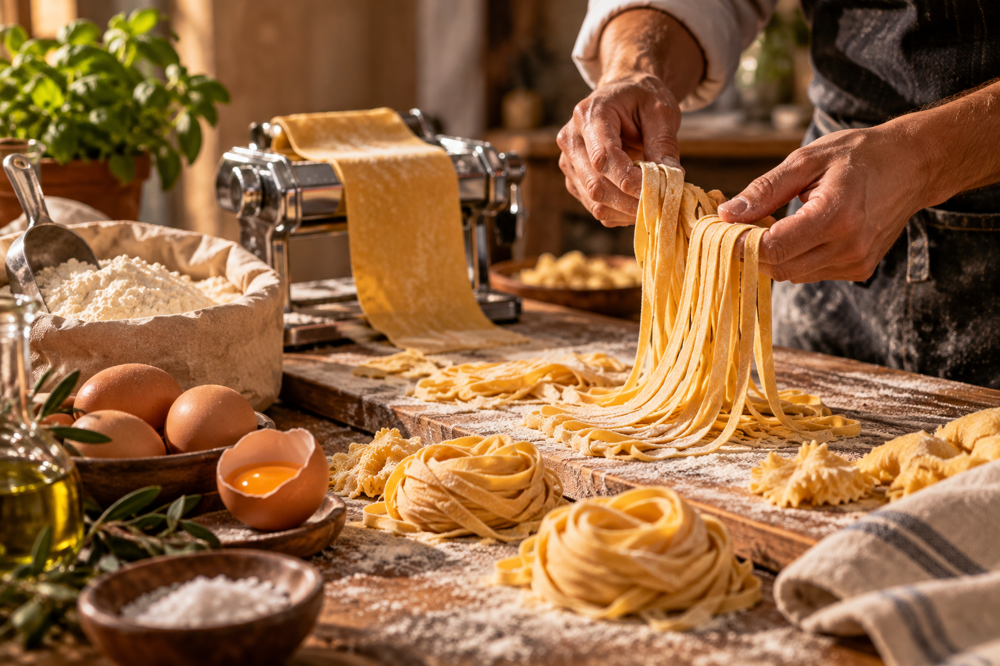

Rolled at the Counter.
Paired at Your Table.
Experience Milanese counter dining. Watch hand-cut egg ribbons paired with 4-hour copper passatas and sommelier-curated natural Italian vintages.
The Four Golden Atelier Pillars
Every batch of pasta produced at our counter adheres strictly to four old-world principles.
EGG YOLKS / KG
Fresh pasture yolk dough producing a silky golden color and luxurious bite.
STONE-GROUND
Selected durum semolina flour harvested from southern Italian wheat fields.
DIE EXTRUSION
Hand-extruded through vintage brass dies for a porous, sauce-clinging surface.
AIR CURING
Gently rested on wooden drying frames to preserve natural aroma and texture.

The Pasta Bar Menu
Curated daily shapes served at peak freshness with paired Italian house sauces.

Tagliatelle al Ragù
Hand-cut egg ribbons tossed in 6-hour slow simmered wild boar soffritto passata.
Paired with: Natural Chianti Classico
Pappardelle Aglio e Crema
Broad ribbons bathed in roasted garlic sweet cream and crisp mountain sage.
Paired with: Soave Classico
Ravioli Ricotta e Limone
Sheep milk ricotta and lemon zest filled pillows with brown butter sauce.
Paired with: Vermentino di SardegnaThe Wine & Pasta Pairing Matrix
Explore how our master sfogliatrici and sommelier pair hand-cut pasta shapes with natural Italian vintages.
Chianti Classico Riserva DOCG 2019
Paired with: Tagliatelle al Ragù di Cinghiale
The vibrant acidity and firm, rustic tannins of wild Sangiovese grapes cut effortlessly through the rich, slow-simmered fats of Tuscan wild boar ragù.
Ripe sour cherry, crushed violets, dried thyme, and toasted oak with a long, savory mineral finish.
Words From Our Counter Guests
Reflections from food writers, culinary guides, and regular patrons who dine at our pasta counter.
"Watching the sfogliatrice knead 40-yolk dough before your eyes, then tasting the Tagliatelle al Ragù seconds later is pure magic. Easily the most authentic pasta experience in the city."
"The texture of their brass-die Pappardelle with cream and sage is unforgettable. Every Friday evening at the wine bar counter feels like being transported to Emilia-Romagna."
"We reserved the counter for a private anniversary tasting. Watching master pasta makers shape delicate lemon ricotta ravioli live was the highlight of our year."